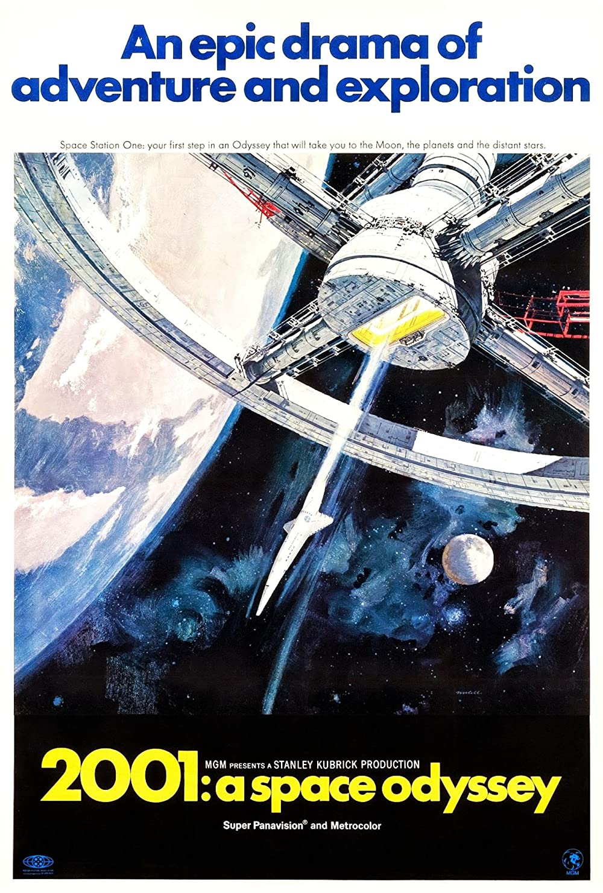

The way it astounded and puzzled its audiences more than 50 years ago, it does so even now. And what it did to push the limits of storytelling? Maybe not explicitly, maybe. But it did challenged its viewers to engage with the story in a way which is far more challenging and involved. It was a much more of a reaction than simply catharsis which was a common trait of the movies those days. But cinema was changing even then and that is a good sign because times change as well. A good place to get started talking about this movie will be with its elaborate summary because boy it needs some elaboration.
So let's begin at the beginning.
The movie starts with a old world that is inhabited by apes. But before that there is a two minute sequence right at the beginning where we see a giant black body enveloping the whole screen, the true signififcance of which can ideally only be appreciated on multiple viewings and preferably with a psychedelic.
